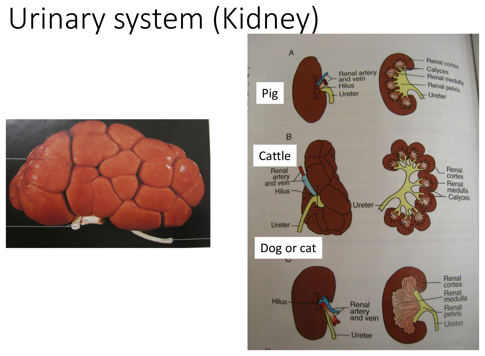
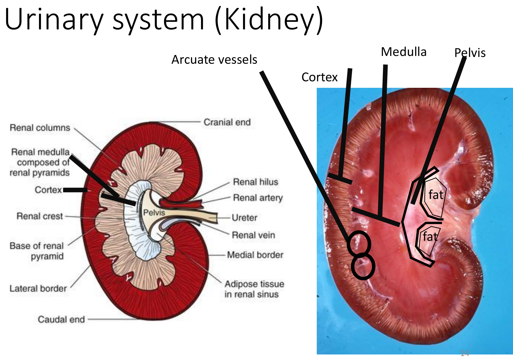

重點摘要
- 泌尿系統結構簡單但物種差異密集：2 顆腎、2 條輸尿管、1 個膀胱、1 條尿道，右腎位置比左腎更前側（頭側）——這是多數哺乳動物的通則，豬是例外，複習時務必記住這個反例。
- 腎臟依髓質乳頭融合程度分「單乳頭腎」與「多乳頭腎」，是全章最重要的物種比較主軸：犬貓馬的腎乳頭融合成單一乳頭（unipyramidal），腎盂僅有單一、不明顯的腎盞；豬則維持多個獨立乳頭與腎盞（multipyramidal）但表面仍平滑、無分葉；牛則是多乳頭加上表面外部分葉，是唯一表面不平滑的物種。
- 牛沒有腎盂（renal pelvis）這個構造——牛的每個腎葉各自獨立引流到輸尿管的分支，沒有集中的漏斗狀集尿腔，這與牛腎臟外表分葉、內部多乳頭的構造是同一套邏輯的不同呈現方式。
- 輸尿管以斜角穿入膀胱壁，這個斜行角度在膀胱充盈擴張時會被動關閉輸尿管開口，形成類似瓣膜的防逆流機制，避免膀胱內尿液逆流回輸尿管與腎臟（防止上行性感染）。
- 膀胱空虛時完全位於骨盆腔內、貼靠恥骨，但隨尿液充盈會逐漸前移進入腹腔——這解釋了為什麼觸診膀胱大小可粗略評估排尿狀況，也是腹部超音波／X 光判讀膀胱位置時需考慮的生理變異。
- 公犬貓尿道分三段：攝護腺部、膜部（骨盆部）、陰莖部，其中陰莖部最狹窄，是公貓泌尿道阻塞（尿道栓塞）最常見的解剖好發部位，尤其在陰莖骨（os penis）遠端附近，是急重症泌尿道阻塞的核心解剖知識。
- 禽類腎臟細長、分三葉，緊密嵌入合薦骨（synsacrum）凹槽內，且沒有腎盂構造，外觀較哺乳動物均質；禽類尿液呈半固體尿酸鹽（非液態尿素），會與糞便一起經泄殖腔排出，這與哺乳動物泌尿系統的排尿機制完全不同。
泌尿系統總論 Overview
泌尿系統負責過濾血液、排除代謝廢物並維持體液恆定，構造相對單純，但物種間差異密集，是本頁複習的重點主軸。
字源
如 Nephrology（腎臟學）
如 Renal artery（腎動脈）
泌尿系統的四個構成
2 顆
2 條
1 個
1 條
腎臟位置
腎臟位於前幾節腰椎腹側兩側；右腎位置比左腎更前側（頭側）——豬是例外，複習時務必記住這個反例，其餘物種皆遵循此通則。
腎臟外觀與物種差異 Kidney: External Anatomy
腎臟外覆一層纖維囊（Fibrous capsule），正常情況下可輕易剝離；外觀呈豆狀，表面平滑度依物種而異。
表面型態物種比較重要
| 物種 | 表面 | 分葉數 |
|---|---|---|
| 犬、貓、馬 | 平滑 | —（乳頭已融合，見下節） |
| 豬 | 平滑 | 內部仍為多乳頭，但外表無分葉 |
| 牛 | 不平滑，有外部分葉 | 約 12 個腎葉（唯一表面不平滑的物種） |

腎臟內部構造 Kidney: Internal Anatomy
腎臟剖面由外而內可見皮質、髓質與腎盂系統，是本頁物種比較最密集的一節。

皮質與髓質
外層部分，含弓狀動脈與弓狀靜脈（Arcuate artery / vein）。
內層部分，環繞腎盂周圍。
單乳頭腎 vs. 多乳頭腎重要
牛與豬的髓質呈明顯的錐體狀分區（Pyramid-shaped），稱多乳頭腎／多葉腎（Multipyramidal／Multilobar）；犬、馬、貓的錐體則彼此融合成單一錐體，稱單乳頭腎／單葉腎（Unipyramidal／Unilobar）。
| 物種 | 腎乳頭／腎盞 | 外部分葉 |
|---|---|---|
| 犬、貓 | 單一腎乳頭，腎盞不明顯（unipyramidal） | 無 |
| 豬 | 多個獨立腎乳頭與腎盞（multipyramidal） | 無 |
| 牛 | 多個獨立腎乳頭與腎盞（multipyramidal） | 有（外表分葉） |
腎盂系統：腎門、腎盂、腎盞、腎盂隱窩
| 構造 | 說明 |
|---|---|
| 腎門 Hilus | 血管、淋巴、神經、輸尿管進出腎臟的部位 |
| 腎盂 Renal pelvis | 腎門內漏斗狀的集尿腔；牛沒有腎盂這項構造 |
| 腎盞 Calyx | 由腎錐體通往腎盂的杯狀凹陷 |
| 腎盂隱窩 Pelvic recess | 位於腎乳頭與腎盂之間的憩室，功能類似腎盞 |
※ 犬貓因腎乳頭已融合為單一構造，腎盞也隨之不明顯（single calyx, not distinct）。
牛沒有腎盂：每個腎葉的腎盞各自獨立連接到輸尿管的分支，尿液不經過集中的漏斗狀集尿腔，直接由多條腎盞分支匯入輸尿管——這與牛腎臟外表分葉、內部多乳頭的構造是同一套解剖邏輯的延伸，複習時建議三者一起記憶。
輸尿管 Ureter
輸尿管是連接腎門與膀胱的細長管道，負責將尿液由腎臟運送至膀胱儲存。
輸尿管以斜角（oblique angle）穿入膀胱壁——當膀胱因尿液充盈而擴張時，膀胱壁肌肉的張力會被動壓迫並關閉輸尿管在膀胱壁內的斜行開口，形成類似瓣膜的防逆流機制，避免膀胱內尿液逆流回輸尿管與腎臟，是預防上行性泌尿道感染的重要解剖基礎。
膀胱 Urinary Bladder
膀胱是儲存尿液的囊狀器官，位置隨充盈程度而變化。
三角區 Trigone
膀胱頸部至尿道攝護腺部之間的三角形區域，是膀胱內感覺神經分布最密集的部位之一，與排尿反射的誘發密切相關。
位置隨充盈程度改變
完全位於骨盆腔內，貼靠恥骨（pubic bone）。
逐漸向前（頭側）移入腹腔，體積增大。
觸診膀胱大小可粗略評估排尿狀況（如膀胱過度膨脹提示尿道阻塞或神經性排尿障礙）；影像學（X 光、超音波）判讀膀胱位置時，也需將這項生理性位置變異納入考量。
尿道 Urethra
尿道自膀胱頸部延伸，經骨盆腔通往體外，公母動物構造差異顯著。
公犬貓尿道三段重要
| 分段 | 位置 |
|---|---|
| 攝護腺部 Prostatic portion | 膀胱頸部至攝護腺後緣，環繞攝護腺 |
| 膜部／骨盆部 Membranous (pelvic) portion | 穿越骨盆腔 |
| 陰莖部 Penile portion | 沿陰莖延伸至尿道外口，管腔最狹窄 |
陰莖部尿道是公犬貓尿道中最狹窄的一段，尤其在陰莖骨（os penis）遠端附近管徑更細，是結石、黏液栓子阻塞的好發部位——公貓泌尿道阻塞（尿道栓塞）是急重症常見病例，好發部位正是此處，複習尿道解剖時務必與這項臨床急症連結記憶。
母犬貓尿道
母性尿道相對短而直，自膀胱頸部經骨盆腔開口於陰道前庭腹側，因解剖路徑較短且直，母犬貓泌尿道阻塞的發生率遠低於公犬貓。
禽類泌尿系統 Avian Urinary System
禽類泌尿系統的構造與排泄產物型態都與哺乳動物截然不同。
禽類腎臟
雞的腎臟呈細長形，分為三葉（3 divisions），沒有腎盂這項構造，外觀相對均質（homogenous），不像哺乳動物腎臟有清楚的皮質髓質分層與集尿腔。
禽類腎臟緊密嵌入合薦骨（Synsacrum，脊椎與骨盆癒合而成的骨骼構造）的凹槽內，位置固定且受骨骼保護，是禽類特有的解剖配置。
禽類的含氮廢物主要以尿酸鹽（urate）形式排出，呈半固體的白色糊狀物，而非哺乳動物的液態尿素尿液；禽類尿液與糞便會一起經泄殖腔（Cloaca）排出體外，沒有獨立的體外開口——這項排泄機制與構造上的差異，是禽病學評估禽類泌尿系統疾病（如痛風 gout）時的重要基礎知識。
學習重點整理
考試／臨床實務角度的整理，複習前可先快速掃過本節，找出自己不熟的部分再回對應章節細讀。
練習題 Practice Quiz
涵蓋腎臟外觀與內部構造、輸尿管、膀胱、尿道、禽類泌尿系統各章節重點，先自己作答再點「顯示答案」核對，答錯的觀念請回對應章節重讀一次。
右腎比左腎位置更前側是多數哺乳動物的通則，但豬是例外，是本節常考的反例。
牛的腎臟是唯一表面不平滑、具有明顯外部分葉（約 12 葉）的物種；豬的腎臟內部雖也是多乳頭構造，但外表仍維持平滑。
單乳頭腎（unipyramidal）是腎髓質的所有錐體融合成單一構造，腎盞也隨之不明顯，代表物種為犬、貓、馬；多乳頭腎（multipyramidal）則保留多個獨立的腎錐體與腎盞，代表物種為豬、牛。牛在多乳頭的基礎上還多了外部分葉，是三者中構造最複雜的。
牛沒有腎盂這項構造，每個腎葉的腎盞各自獨立連接到輸尿管的分支，尿液不經過集中的漏斗狀集尿腔，這與牛腎臟外表分葉、內部多乳頭的構造是同一套解剖邏輯的延伸。
輸尿管以斜角穿入膀胱壁，當膀胱因尿液充盈而擴張時，膀胱壁肌肉的張力會被動壓迫並關閉輸尿管在膀胱壁內的斜行開口，形成類似瓣膜的防逆流機制，避免膀胱內尿液逆流回輸尿管與腎臟，是預防上行性泌尿道感染的重要解剖基礎。
陰莖部尿道是公犬貓尿道中最狹窄的一段，尤其在陰莖骨（os penis）遠端附近管徑更細，是結石、黏液栓子阻塞的好發部位，也是公貓泌尿道阻塞（尿道栓塞）這項急重症最常見的解剖好發位置。
膀胱空虛時完全位於骨盆腔內、貼靠恥骨，但隨尿液充盈會逐漸向前移入腹腔，體積增大；這是觸診評估排尿狀況與影像學判讀膀胱位置時必須考慮的生理性變異。
禽類腎臟呈細長形，分為三葉，緊密嵌入合薦骨的凹槽內，且沒有腎盂這項構造，外觀較哺乳動物均質。排泄機制上，禽類的含氮廢物主要以半固體的尿酸鹽形式排出，而非哺乳動物的液態尿素尿液；禽類尿液與糞便會一起經泄殖腔排出體外，沒有像哺乳動物一樣獨立的尿道外口，這是禽病學評估禽類泌尿系統疾病時的重要基礎知識。